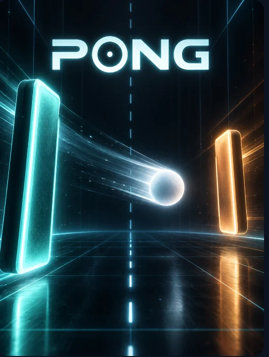
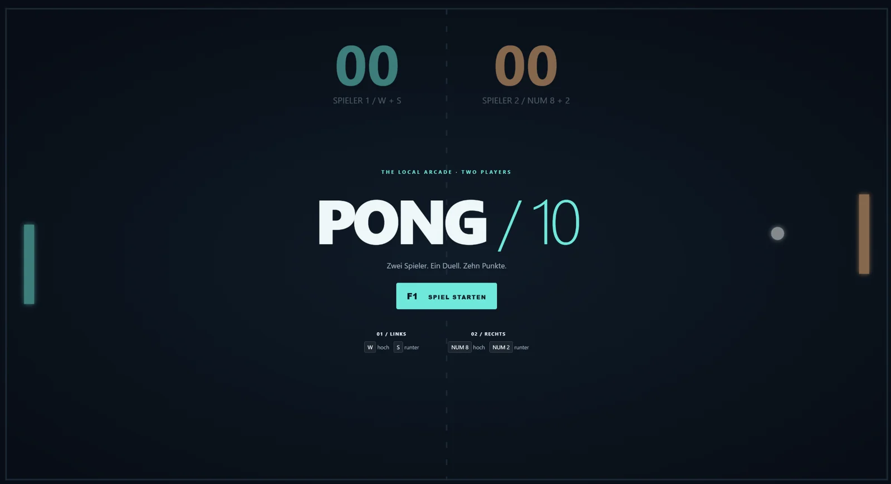
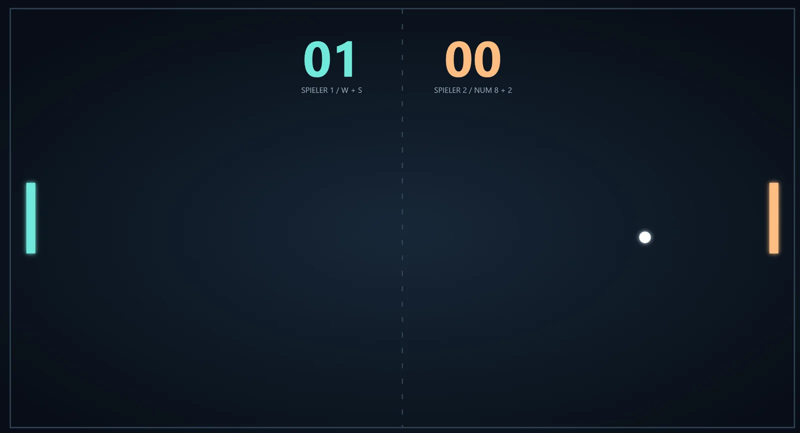

PROJEKT 03 / Spiel · Klassiker
Pong
Zurück zum Wesentlichen.

Hinter dem Projekt.
Pong ist eine eigene Umsetzung des Spielklassikers. Die Aufnahmen zeigen den Startbildschirm und einen Spielmoment mit zwei Schlägern, Ball und Punktestand.
Merkmale & Einblicke.
- Eigenständiges Pong-Projekt
- Zwei Schläger, ein Ball und ein Punktestand
- Einblicke in Startbildschirm und Spielfeld
EINBLICKE INS PROJEKT
Momente aus dem Spiel.
Vom Nutzer bereitgestellte Projektaufnahmen. Alle gezeigten Oberflächen und Schaltflächen sind Teil statischer Bilder. Hier wird keine Anwendung gestartet; die Bilder belegen keinen aktuell verfügbaren Live-Zugang. Bild auswählen zum Vergrößern.



